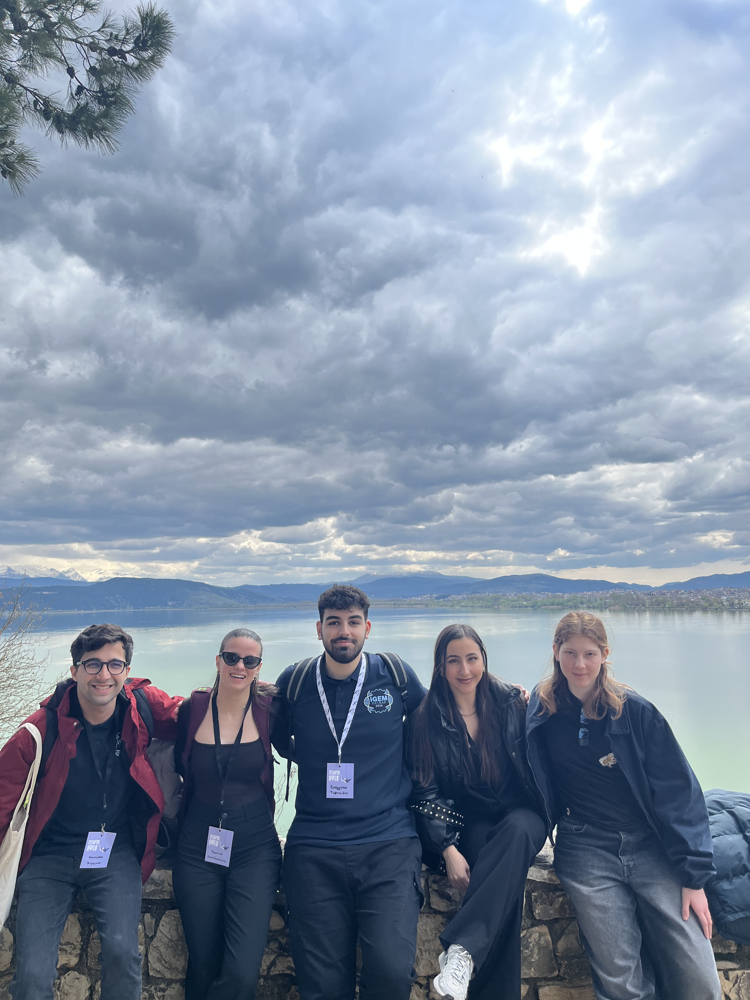

iGEM Patras 2026
Διεπιστημονική φοιτητική ομάδα
Δημιουργώντας καινοτόμες λύσεις μέσω Συνθετικής Βιολογίας
Διεπιστημονική φοιτητική ομάδα
Δημιουργώντας καινοτόμες λύσεις μέσω Συνθετικής Βιολογίας
Η iGEM Patras 2026 αποτελεί μια διεπιστημονική φοιτητική ομάδα που δραστηριοποιείται στον τομέα της Συνθετικής Βιολογίας, αποτελούμενη από προπτυχιακούς και μεταπτυχιακούς φοιτητές. Έδρα της ομάδας είναι το Εργαστήριο Φαρμακογονιδιωματικής και Εξατομικευμένης Θεραπείας του Τμήματος Φαρμακευτικής, με κύριους επιστημονικούς υπευθύνους τον Κ. Πατρινό και τον Κ. Λαγουμιτζή.
Στόχος της ομάδας είναι η βελτίωση της ποιότητας ζωής μέσω της ανάπτυξης καινοτόμων και εφαρμόσιμων λύσεων, αξιοποιώντας σύγχρονες μεθοδολογίες της Συνθετικής Βιολογίας για την αντιμετώπιση προκλήσεων στον τομέα της υγείας και του περιβάλλοντος.
Μέσα από το ερευνητικό της έργο, επιδιώκει να ανταποκριθεί με ανθρωποκεντρική προσέγγιση στα σύγχρονα ζητήματα. Η ερευνητική και εκπαιδευτική δραστηριότητα της ομάδας κορυφώνεται με τη συμμετοχή της στον παγκόσμιο διαγωνισμό iGEM, ο οποίος πραγματοποιείται στο τέλος κάθε έτους.

10 μέλη από διάφορα τμήματα
Καινοτόμες λύσεις για υγεία
Συμμετοχή στο iGEM
Η Συνθετική Βιολογία συνδυάζει αρχές της Βιολογίας, της Μηχανικής, της Χημείας, της Γενετικής και της Επιστήμης των Υπολογιστών. Απώτερος στόχος της είναι ο σχεδιασμός νέων βιολογικών μελών, συσκευών και συστημάτων, ή και ο επανασχεδιασμός προϋπάρχοντων βιολογικών συστημάτων.
Τα συστήματα αυτά δημιουργούνται με τέτοιο τρόπο ώστε να είναι κατά το δυνατόν προβλέψιμα, αποτελεσματικά και εύρωστα. Σε αντίθεση με τη Γενετική Μηχανική, η Συνθετική Βιολογία αντιμετωπίζει ολιστικά συστήματα, μονοπάτια, δίκτυα και οργανισμούς διενεργώντας ποσοτικούς και ποιοτικούς ελέγχους και προσαρμογές.
Η Συνθετική Βιολογία βρίσκει ένα συνεχώς διευρυνόμενο φάσμα εφαρμογών, από τη Βιοϊατρική και την Οικολογία μέχρι τη μόδα και τη Διαστημική Βιολογία. Οι δυνατότητες είναι απεριόριστες και τα όρια τα θέτουν μόνο η Βιοηθική και η φαντασία μας.
Αποτελεί τον μεγαλύτερο διαγωνισμό συνθετικής βιολογίας, ο οποίος διοργανώνεται από το MIT. Κάθε χρόνο, συμβάλλει στην εκπαίδευση της νέας γενιάς επιστημόνων, παρέχοντας σε διεπιστημονικές φοιτητικές ομάδες τόσο το κίνητρο όσο και την κατάλληλη πλατφόρμα για τον σχεδιασμό, την ανάπτυξη και την παρουσίαση έργων που στοχεύουν στην επίλυση ζητημάτων ζωτικής σημασίας, ενώ παράλληλα οι συμμετέχοντες διαγωνίζονται σε παγκόσμιο επίπεδο.
2 Χρυσά Μετάλλια (2024 & 2025)
1 Ασημένιο Μετάλλιο (2020)
2 Χάλκινα Μετάλλια (2021 & 2022)
Μια διεπιστημονική ομάδα 10 μελών από διάφορα τμήματα:
Βιολογικό
Ιατρική
Χημικό
Φαρμακευτική
Βιοπληροφορική
Μηχανικοί Ηλεκτρονικών Υπολογιστών
Μοριακή Βιολογία & Γενετική
Η ομάδα μας, θέτοντας ως προτεραιότητα τον κοινωνικό της αντίκτυπο και την ευαισθητοποίηση του ευρύτερου κοινού σχετικά με τον χρόνιο πόνο, διοργανώνει δράσεις και προωθεί το φετινό project μέσω συνεδρίων. Έχουμε ηχηρή παρουσία σε πανελλήνια συνέδρια, φοιτητικά και μη, ενώ συνεργαζόμαστε στενά με ειδικούς και συλλόγους ασθενών για τη βελτιστοποίησης της προσέγγισής μας.
Παράλληλα, επενδύουμε στη βιωματική μάθηση μέσω σχεδιασμού ενός προσβάσιμου εκπαιδευτικού επιτραπέζιου παιχνιδιού σχετικού με τον χρόνιο πόνο και τη συνθετική βιολογία.
Διοργανώνουμε επίσης δράσεις για ασθενείς και κοινωνικές ομάδες που πλήττονται από χρόνιο πόνο, με απώτερο στόχο την ενεργοποίησή τους και την ενημέρωσή τους σχετικά με την πρόληψη και την αντιμετώπιση των συμπτωμάτων του χρόνιου πόνου.
Σχεδιάζουμε ακόμη σειρές ανοικτών διαδικτυακών μαθημάτων για τον χρόνιο πόνο, τον καρκίνο και άλλες θεματικές σχετικές με τη βιολογία και το project, για την ενημέρωση του ευρύτερου αλλά και του ειδικού κοινού που επιθυμεί να διευρύνει τις σχετικές γνώσεις του.
Χρυσάνθη Μπουσγολίτη: 6931360355
Βασιλική Παπαβασιλείου: 6974657046
Ασημίνα Παρασκευοπούλου: 6907085152
Δέσποινα Κουκουλάκη: 6980647140
Κέισι Ζανάι: 6980818464